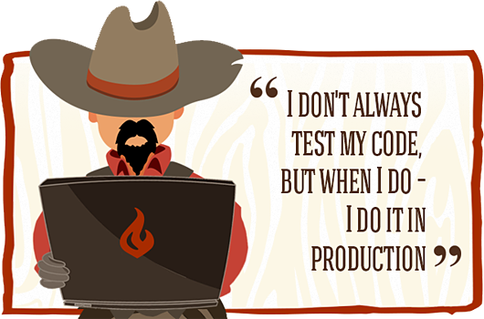

WordCamp Montréal 2023
Environnement de développement productif
ou conseils/astuces pratique pour être productifPour suivre en même temps
https://ebeldev.github.io/wordcamp-montreal-2023.github.io/
Script génial
Installer WordPress une ligne de commande.
Configurer votre admin user
Configurer votre langue
Configurer votre timezone
Télécharger et activer des extensions
Créer un certains nombre de posts
Créer un dummy user
Ouvrir votre logiciel d'édition de code
Ouvrir votre navigateur sur le wp-admin
Et tellement plus
Le but pour vous aujourd'hui
- Des trucs, outils et snippets pour üöÄ votre productivit√©
Ordre du jour
- - Workflow de développement
- - Comment bien debugger un site
- - Snippets
- - Alias
- - Astuces avec WP CLI
- - Astuces avec votre clavier
- - Astuces divers
Étienne Bélanger

- - Développeur fullstack auto-didacte
- - J'utilise WordPress depuis plus de 15 ans
- - Je travaille @ District Web comme team lead et comme développeur web et applicatif fullstack.
- - Boutiques en ligne, applications web, apis et applications native
-
Contact
- etienne@etiennebelanger.com
- belangeretienne
- @ebeldev
Maîtrise votre workflow de développement
Dotez-vous d'un environnement local
Production
Local ⇒ Production

Local ⇒ Stage ⇒ Production
Workflow
- Développement local
- Stage
- Production
Notes
- local: peut être bien différent de votre production
- stage : sur un serveur identique à votre site en production
- production : vous avez pas le droit à l'erreur
local dev setup
* Attention de ne pas avoir plusieurs localhost. Ça pourrait vous causer des problèmes
Lamp stack
(Apache, MySql, Php stack)
* choissez seulement 1 option
- Mamp (Mac & Windows)
- Wamp (Windows)
- Xamp (cross-platform)
- Lamp (Linux)
Natif
* choissez seulement 1 option
* si vous avez déja un LAMP ne choississez pas celle-ci
Configuration native (installer manuellement php, mysql et apache ou nginx)
Valet (Mac)
Docker
Local by flywheel (Mac, Windows, Linux)
VVV - Vagrant environnement (Mac, Windows, Linux)
Docker (Mac, Window, Linux)
Ddev (roule sous Docker) (Mac, Window, Linux)
Facteurs décisionnels
Facilité d'installation et de configuration
Facilité à mettre sur pied un site
Consommation de ressource
Limitation en ressource
Isolation
Copie d'environnement
Pour plus de renseignements :
https://wordpress.tv/2022/09/22/local-wordpress-development/
Mon choix actuel
Ddev (runs on Docker) (Mac, Window, Linux)
Et une partie de nos équipes utilise Local by Flywheel
- Facilité d'installation
# Install DDEV
brew install ddev/ddev/ddev
# cd into your wordpress project
cd /nom_du_projet_wordpress
# configure ddev
ddev config
- Facilité de partir un projet
# Partir un environnement de ton projet
ddev start nomduprojet
- Peu rouler plusieurs projets en même temps
- Facilement configurable (version de php, mariadb, nodejs)
- WP CLI est installé par défaut
- Peu rouler plusieurs types de projets en php (Drupal, Laravel, Magento, Craft CMS)
ddev phpmyadmin
ddev launch -m
Pour plus d'informations
Trucs et astuces


Debugging
var dump
Sortie dans l'écran
Pour les sorties à l'écran
Vardumper de Symfony

Sortie dans le fichier debug.log
En dev local et en stage
activer toujours vos debug
le fichier debug.log situé dans le wp-content
Quand les debug sont activés, rien ne sortira sur le front.

Debug en production
ATTENTION !!
C'est possible si !
Vous avez activé vos debug
Car une fois les debug activé rien ne sortira sur le front de votre site
query monitor
L'extension WordPress essentiel pour le debugging

Requêtes à la base de donnée
Erreurs php
Appels HTTP api
Scripts et styles
Fichier de template de thème
Block editor blocks
Et bien plus...
Isoler vos tests, problèmes et nouveau plugins
- Faites vous des sites WordPress en local avec seulement le strict minimum pour isoler et tester thème, plugins, code custom. - Faites-vous des Code penDebugging in scss
@mixin foobar($foo) {
@warn "foobar == #{$foo}";
}
Snippets et alias

Snippets et alias
Augmenter votre efficacité du bout de vos doigts!
VS Code snippets
VS Code extensions
Shell alias
La touche 'tab' c'est votre alli√© ! === üöÄüöÄüöÄ
Dans votre shell (zsh auto-completion, auto-suggestion)

To start a snippet
Emmet
And many more, try it !
VsCode Snippets
WPDEBUG
{
...,
"WordPress Debug mode": {
"prefix": "wpdebug",
"body": [
"// Enable WP_DEBUG mode",
"define( 'WP_DEBUG', true );",
"define( 'WP_DEBUG_LOG', true );",
"define( 'WP_DEBUG_DISPLAY', false );",
"@ini_set( 'display_errors', 0 );",
"define( 'SCRIPT_DEBUG', true );"
]
},
}

phpt
vscode snippet
{
...,
"PHPTAGS": {
"prefix": "phpt",
"body": [
""
],
"description": "Open and close php tags"
},
}
executing vscode snippet

pdnt
vscode snippet
{
...,
"PHPDUMPNOTAGS": {
"prefix": "pdnt",
"body": [
"echo'';",
"var_dump($0);",
"echo '';"
],
"description": "echo pre tag and var dump"
},
}
executing vscode snippet

debuglog
vscode snippet
{
...,
"Error log advanced": {
"prefix": "debuglog2",
"body": [
"ob_start();",
"var_dump(${1});",
"var_dump(${2});",
"$$content = ob_get_contents();",
"ob_end_clean();",
"error_log($$content);"
]
},
}
executing vscode snippet
In the debug.log file
VS Code extensions
- WordPress snippets
- Acf Snippets
Alias et functions comme alias
Snippets dans votre shell
Selon votre shell, éditez votre fichier de config
Ex: ZSH => .zshrc
Sur mac = cd ~/.zshrc
Avec VS Code = code ~/.zshrc
Fichier ~/.zshrc
# edit hosts files
alias hosts="code /etc/hosts"
Ça va ouvrir le fichier dans VS Code
Fichier ~/.zshrc
function wpmtl() {
echo Hello world
echo $1
echo Fin du Hello World
}
Résultat dans le terminal
alias clientwoobasic="cd ~/ddev-projects/woobasic"
WP CLI
- Installer ou mettre à jour WordPress
- Configurer votre site
- Télécharger et mettre à jour vos extensions
- Faire un archive de votre site
- Re sauvegarder vos permaliens
- Search and replace
- Pour plus d'informations wp-cli.org/fr/
Migrer votre site WordPress facilement
- WP CLI
- WP CLI with All in one Migration Extended
All In One Migration
Si votre site est gros, cette fenêtre peut durer des heures.
- Partir une sauvegarde :
wp ai1wm backup - Restaurer une sauvegarde :
wp ai1wm restore nom_du_fichier
* note: Le plugin crée un dossier ai1wm-backup dans le wp-content et votre archive doit si retrouver
Aide-mémoire All in one Migration avec WP CLIUtiliser WP CLI
-
Dump la base de donnée (pas drop)
wp db export db.sql - Transférer vos fichiers par rsync ou ftp
- Assurez-vous que le fichier db.sql est à la racine de votre nouveau site
- Sur votre nouveau site Vérifiez les informations de connexion à la db dans config.php
-
Sur votre nouveau site : Remonter votre base de donnée
wp db import db.sql -
Faites un search and replace
wp search-replace http://anciennomdedomaine.com http://nouveaunomdedomaine.com
Apprendre à bouger votre cursor rapidement
avec votre clavier
Déplacer votre cursor au début ou à la fin d'une ligne
cmd + ← ou →

Déplacer votre cursor au début de chaque mot de la ligne
option + ← ou →

Sélectionner une ou plusieurs lettres
shift + ← ou →

Sélectionner un mot au complet dans une ligne
shit + option + ← ou →
Déplacer une ligne ou un bloc
option + ↑ ou ↓
Copier une ligne
shift + option + ↑ ou ↓
Et quand vous combiner le tout
Sélection multiple
Emmet
Extension d'abréviations et de snippet


liens utiles:
Divers
Hot reloading, hot module reload (HMR), Browsersync

Travailler à plusieurs écrans
Finalement
Voici mon script qui me permets mon saint gral d'installation WordPress
- Installer ou mettre à jour WordPress
- Configurer votre site
- Télécharger et mettre à jour vos extensions
- Faire un archive de votre site
- Re sauvegarder vos permaliens
- Search and replace
- Pour plus d'informations wp-cli.org/fr/
function makewpddev() {
mkdir $1 && cd $1 && code . &&
wp core download &&
ddev config --project-type=wordpress &&
ddev get ddev/ddev-phpmyadmin &&
ddev start &&
ddevwpinstall &&
startwpddev &&
ddevwpdummycontent &&
openBrowser $1 &&
openBrowserAdmin $1
}
function ddevwpinstall() {
ddev wp core install --url=$1.ddev.site
--title=$1
--admin_user=districtweb
--admin_password=admin
--admin_email=test@test.com &&
ddev wp language core install fr_CA &&
ddev wp option update WPLANG "fr_CA" &&
ddev wp option update timezone_string
"America/Toronto"
}
function startwpddev() {
ddev wp plugin delete --all &&
ddev wp plugin install all-in-one-wp-migration
--activate &&
ddev wp plugin install query-monitor
--activate
}
function ddevwpdummycontent() {
ddev wp user create fakeeditor
dev+fakeeditor@groupejcl.ca --role=editor &&
curl -N http://loripsum.net/api/5 |
ddev wp post generate --count=10
--post_content
--post_title="CLI Post Title"
--post_author=fakeeditor
}
function openBrowser() {
open -a firefox -g
"https://$1.ddev.site"
}
function openBrowserAdmin() {
open -a firefox -g
"https://$1.ddev.site/wp-admin"
}
See the slides
https://ebeldev.github.io/wordcamp-montreal-2023.github.io/